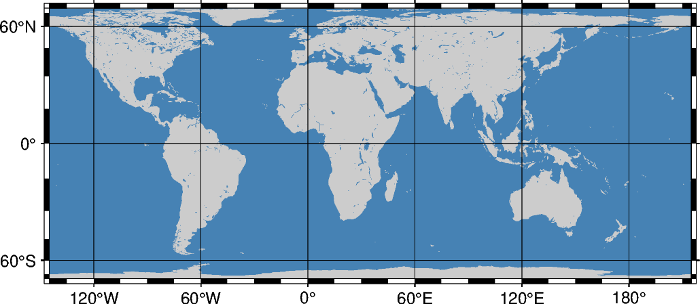

Note
Click here to download the full example code
Cylindrical equal-area¶
This cylindrical projection is actually several projections, depending on what latitude is selected as the standard parallel. However, they are all equal area and hence non-conformal. All meridians and parallels are straight lines.
ylon0/lat0/scale or Ylon0/lat0/width
The projection is set with y or Y. The projection center is set by lon0/lat0, and the figure size is set with scale or width.
Out:
<IPython.core.display.Image object>
import pygmt
fig = pygmt.Figure()
# Use region "d" to specify global region (-180/180/-90/90)
fig.coast(
region="d",
projection="Y35/30/12c",
water="dodgerblue",
shorelines="thinnest",
frame="afg",
)
fig.show()
Total running time of the script: ( 0 minutes 1.277 seconds)